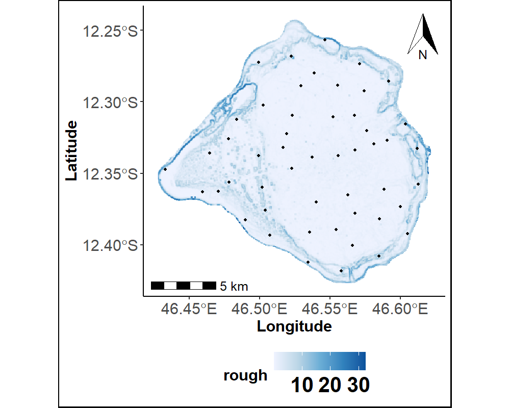
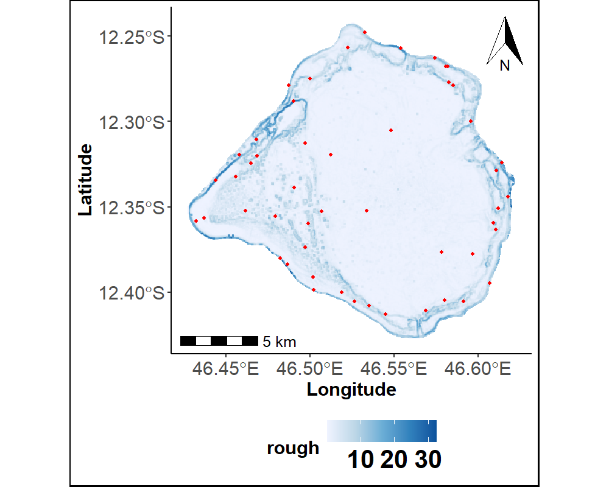

Échantillonnage spatial par couverture (k-means) et par complexité du terrain (médoïdes), appliqués à la cartographie de récifs coralliens — en R et en Python.
Choisir où échantillonner sur le terrain n’est pas anodin : un tirage aléatoire simple peut sur-représenter certaines zones et en laisser d’autres complètement absentes, surtout quand la zone d’étude est irrégulière. Il faut un plan d’échantillonnage qui garantisse une couverture spatiale homogène — ou, mieux encore, qui concentre l’effort là où le terrain est le plus complexe, donc le plus difficile à prédire.
Le code et les fonctions utilisées ici sont ceux employés pour constituer les données d’entraînement du modèle décrit dans « Cartographie grande échelle » sur la page Travaux, appliqués à une zone récifale réelle (le banc du Geyser, à Mayotte). Choisissez le langage qui vous intéresse ci-dessous.
NoteEn bref
SCS-KMeans : k-means sur les coordonnées d’une grille régulière — couverture uniforme, les points échantillonnés sont les centres des clusters.
SCS-CLARA : même objectif, mais chaque point échantillonné est une vraie cellule du terrain (son médoïde), pas un centre calculé — c’est l’algorithme CLARA/PAM en R.
CDS-CLARA(complexity-dependent) : le clustering se fait sur la profondeur et la rugosité du terrain plutôt que sur les coordonnées — l’échantillonnage se concentre là où le relief est le plus complexe.
La méthode
Le terrain est décrit par un raster réel à 50 m de résolution (profondeur et rugosité, entre autres variables), sur lequel les trois méthodes sont appliquées.
AstucePrérequis techniques
Packages R : raster, terra, sf, sp, ggplot2, ggspatial, ggnewscale. Les fonctions scsKM, scsCLARA, cdCLARA et plotPoints sont publiées séparément sur Zenodo.
library(raster)library(sf)library(ggplot2)library(ggspatial)library(ggnewscale)source("scs-kmeans.R") # scsKM() : k-means sur les coordonnéessource("scs-clara.R") # scsCLARA(): médoïdes (CLARA) sur les coordonnéessource("cd-clara.R") # cdCLARA() : médoïdes (CLARA) sur profondeur + rugositésource("sample-points-plot.R")# Raster réel du terrain (50 m de résolution) : profondeur, rugosité, ...Terrain_Attr_50 <- terra::rast("50m_rast_Attr2.tif")Terrain_Attr_50_df <-as.data.frame(Terrain_Attr_50, xy =TRUE)names(Terrain_Attr_50_df) <-append(c("Longitude", "Latitude"), all_predicteurs)Depth_plot <-ggplot(shp2) +geom_sf(fill =NA, color =NA) +geom_tile(data = Terrain_Attr_50_df, aes(Longitude, Latitude, fill = Prof_Moyenne)) +scale_fill_gradientn(colours =terrain.colors(100), na.value ="white", name ="Depth")Roughness_plot <-ggplot(shp2) +geom_sf(fill =NA, color =NA) +geom_tile(data = Terrain_Attr_50_df, aes(Longitude, Latitude, fill = rough)) +scale_fill_gradientn("Rough", colours = RColorBrewer::brewer.pal(5, "Blues"), na.value ="gray")
Profondeur
Rugosité
Ces deux variables — profondeur et rugosité — décrivent la complexité du relief : c’est sur elles que se base l’échantillonnage CDS-CLARA, alors que SCS-KMeans et SCS-CLARA ignorent le relief et ne considèrent que la position géographique.
AstucePrérequis techniques
Seuls numpy, matplotlib et scikit-learn sont nécessaires. Le raster source est un GeoTIFF multi-bandes compressé LZW, illisible par les librairies géospatiales habituelles indisponibles ici (rasterio, GDAL) — un petit lecteur TIFF/LZW pur Python s’en charge à la place. Code complet : terrain_reader.py, sampling.py.
Afficher le code
import syssys.path.insert(0, ".")import numpy as npimport matplotlib.pyplot as pltfrom terrain_reader import read_tiff_bands, read_geotransform, utm_to_latlon# Raster réel du terrain (50 m de résolution, 9 bandes) : bande 0 = profondeur, bande 1 = rugositébands = read_tiff_bands("50m_rast_Attr2.tif")depth, rough = bands[0], bands[1]H, W = depth.shape# Géoréférencement réel (UTM 38S), lu dans les tags du GeoTIFF : la ligne 0 est le nordscale_x, scale_y, tie_x, tie_y = read_geotransform("50m_rast_Attr2.tif")rows, cols = np.mgrid[0:H, 0:W]EASTING, NORTHING = tie_x + cols * scale_x, tie_y - rows * scale_yLAT, LON = utm_to_latlon(EASTING, NORTHING)valid =~np.isnan(depth) &~np.isnan(rough)coords = np.column_stack([EASTING[valid], NORTHING[valid]]) # mètres UTM, pour le clusteringlonlat = np.column_stack([LON[valid], LAT[valid]]) # degrés, pour l'affichagecomplexity = np.column_stack([depth[valid], rough[valid]])
Figure 1: Profondeur et rugosité du terrain réel (banc du Geyser)
Les résultats
Les trois méthodes sont appliquées à la même zone, avec le même nombre de points échantillonnés (K = 50), mais des critères différents : couvrir uniformément l’espace, ou se concentrer sur le relief complexe.
pvtscskm <-scsKM(shp = Geyser_bathy, var =c("Longitude", "Latitude"),iter =12, sampsize =50, nT =10)pvtscscl <-scsCLARA(data = Terrain_Attr_50_df, var =c("Longitude", "Latitude"),iter =1, sampsize =50, disT ="euclidean")pvtcdcl <-cdCLARA(data = Terrain_Attr_50_df, var1 =c("Longitude", "Latitude"),var2 =c("Prof_Moyenne", "rough"), iter =12, sampsize =50, disT ="manhattan")
SCS-KMeans

SCS-CLARA

CDS-CLARA
Les deux premières méthodes produisent une grille de points régulièrement espacés sur toute la zone. La troisième s’en écarte nettement : les points se resserrent le long des bords, là où la rugosité est la plus forte.
Figure 2: Points échantillonnés par les trois méthodes, sur fond de rugosité
Les deux premières méthodes produisent une grille de points régulièrement espacés sur toute la zone. La troisième s’en écarte nettement : les points se resserrent le long des bords, là où la rugosité est la plus forte.
où \(x_i\) sont les cellules du terrain et \(c_k\) les \(K\) points échantillonnés : le k-means choisit les \(c_k\) qui minimisent la distance quadratique moyenne au point échantillonné le plus proche — d’où la couverture régulière. SCS-CLARA et CDS-CLARA reprennent ce même critère, mais imposent en plus que chaque \(c_k\) soit une cellule réelle du terrain (un médoïde), pas un centre recalculé.
Testez par vous-même
Le calcul réel ci-dessus porte sur plus de 100 000 cellules — trop pour un navigateur. Voici la même idée sur un petit nuage de 16 points en 2D, regroupés en 3 amas visibles à l’œil nu : modifiez k et cliquez sur Exécuter pour voir quels points sont retenus comme échantillons.
Avertissement
Version simplifiée à but pédagogique, sur un exemple jouet — le calcul réel sur les données complètes est celui de la section précédente.
NoteCe que fait ce code
16 points 2D sont regroupés en k amas : l’algorithme alterne entre l’affectation de chaque point au centre le plus proche et le recalcul des centres, jusqu’à convergence — puis retient, pour chaque amas, le point réellement observé le plus proche de son centre (le médoïde), plutôt que le centre lui-même qui n’est en général pas un point du jeu de données. Changez k et relancez pour voir le découpage en amas s’adapter.
NoteCe que fait ce code
16 points 2D sont regroupés en k amas : l’algorithme alterne entre l’affectation de chaque point au centre le plus proche et le recalcul des centres, jusqu’à convergence — puis retient, pour chaque amas, le point réellement observé le plus proche de son centre (le médoïde), plutôt que le centre lui-même qui n’est en général pas un point du jeu de données. Changez k et relancez pour voir le découpage en amas s’adapter.
Ces méthodes d’échantillonnage ont servi à constituer les données d’entraînement du modèle de cartographie géomorphologique automatique décrit dans Faye et al. (2024).
Faye, Paul Aimé Latsouck, Elodie Brunel, Thomas Claverie, Solym Mawaki Manou-Abi, et Sophie Dabo-Niang. 2024. « Automatic geomorphological mapping using ground truth data with coverage sampling and random forest algorithms ». Earth Science Informatics, 1‑18.